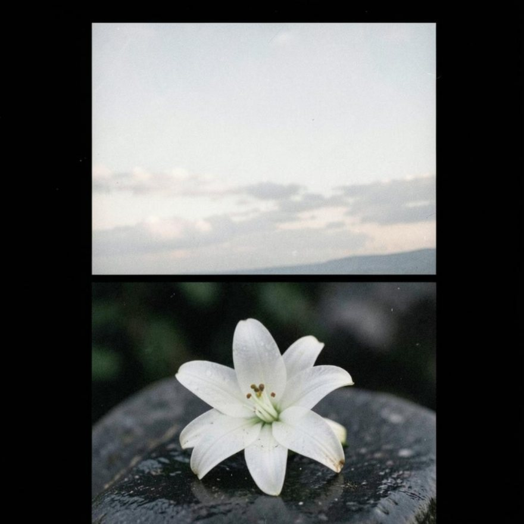

고마움 상조회
24시간

고마움 상조회
사랑하는 이와 이별하는 순간,
함께하겠습니다.
0:00
--:--
전화 접수 준비 중
부고장 만들기
무엇부터 하나
미리 받지 않습니다 · 쓰신 만큼만 · 해마다 곁에
더 알아보기
후불제 장례
접수부터 정산까지
단가표
품목별로 먼저 드립니다
장례 절차
임종 여섯 시간, 3일장
부고 문안
문자로 보낼 글
모바일 부고장
링크 하나로 알리기
기일 리마인드
해마다 먼저 연락
장례비 가늠
대략의 액수
내 상조 점검
해약환급금 계산
결합상품 판별
8문항
기독교 장례
네 번의 예배